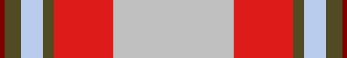

Pilot Information File
Basic Information
Pilot ID: ea2dca
Pilot Service: RN
Pilot Rank: Lt Cdr
Pilot Name: Engines
Awards
| ID | Name | Issued | Ribbon |
|---|---|---|---|
| 4 | OP_TALON_1 | 07 Jan 24 |  |
| 5 | 50_HOURS | 07 Jan 24 |  |
| 6 | 100_HOURS | 07 Jan 24 |  |
| 7 | 250_HOURS | 07 Jan 24 |  |
| 9 | 50_TYPE_HOURS | 07 Jan 24 |  |
| 10 | 100_TYPE_HOURS | 07 Jan 24 |  |
| 11 | 250_TYPE_HOURS | 07 Jan 24 |  |
| 14 | CONTROLLER | 07 Jan 24 |  |
| 15 | OP_PULLMAN | 07 Jan 24 |  |
| 16 | HARRIER_TYPE_CONVERSION | 07 Jan 24 |  |
| 25 | LOGISTICS_ENABLER | 07 Jan 24 | |
| 26 | MISSION_MAKER | 07 Jan 24 |  |
| 28 | AVIATION_AMBASSADOR | 07 Jan 24 |  |
| 31 | FINANCIAL_CONTRIBUTOR | 07 Jan 24 |  |
| 34 | SAR_PILOT | 07 Jan 24 |  |
Qualifications
| ID | Name | Issued | Expires |
|---|---|---|---|
| 1 | CQ_STOVL_DAY | 07 Jan 24 | 06 Jan 25 |
| 2 | CQ_STOVL_NIGHT | 07 Jan 24 | 06 Jan 25 |
Logbook
Totals
Last Joined: 20240105
Total hours: 357.0
Type Totals
| Type | Hours |
|---|---|
| AV8BNA | 272.1 |
| Mi-8MT | 23.9 |
| SA342L | 16.8 |
| SA342M | 10.8 |
| SA342Minigun | 7.9 |
| MiG-21Bis | 6.0 |
| SA342Mistral | 5.8 |
| T-45 | 4.3 |
| F-14A-135-GR RIO | 2.8 |
| T-45 Copilot | 2.2 |
| AH-64D_BLK_II | 2.1 |
| UH-1H | 1.3 |
| AH-64D_BLK_II Copilot | 1.0 |
Kills
| Category | Kills |
|---|---|
| Planes | 39 |
| Buildings | 18 |
| Ground Units | 197 |